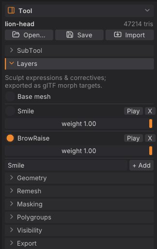

Sculpt layers and blend shapes
Sculpt layers hold changes on top of the base mesh, each with its own weight: a smile, a blink, a corrective shape or a variation you want to dial in and out. Because a layer is a set of per-vertex offsets, it exports straight to game engines and DCC tools as a blend shape (morph target). This chapter covers creating, sculpting into, weighting, playing and exporting layers.
How layers work#
- Each layer stores how far every vertex moves from the base. The shape you see is the base plus every layer times its weight.
- New strokes go into the active layer, or into the base mesh when Base mesh is selected.
- Layers belong to a SubTool: each SubTool has its own list of layers.
- A weight of 0 turns a layer off, 1 shows it as sculpted. Scripts can also set negative weights or weights above 1 to exaggerate a shape.
- Layers work on every subdivision level, like ZBrush's 3D Layers: see Layers and subdivision levels.
- Layers survive subdividing, decimating and LOD chains. A voxel remesh bakes them into the surface (the layers are gone afterwards).
The Layers sub-palette#
Open Tool > Layers in the right tray.


From top to bottom:
- Base mesh: select it to sculpt the base shape.
- One block per layer: a radio button with the layer's name (select it to sculpt into that layer), Play, X (delete) and a weight slider from 0 to 1.
- A name field and + Add at the bottom.
The title strip shows the active layer (Layer Smile, or Layer Base).
Add a layer and sculpt into it#
-
Type a name in the field at the bottom of Tool > Layers, for example
SmileorBlinkL. - Click + Add (or press Enter in the field). The new layer becomes the active one.
- Sculpt. Every stroke goes into the layer until you select another layer or Base mesh.
A layer whose weight is 0 can't be sculpted into: SculptForge tells you to raise the weight first.
Adjust and preview weights#
- Drag a layer's weight slider to blend it in and out.
- Play animates the layer from 0 to 1 and back, over and over, so you can judge the motion. Click Stop to end it; the weight returns to 1. Starting a stroke also stops playback.
Weights are saved with the project and used by exports that keep weights (USD writes the current weights).
Delete a layer#
Click X next to the layer. Its offsets are removed from the mesh and the base mesh becomes the active target. Deleting a layer is undoable.
Layers and subdivision levels#
With subdivision levels a layer works the way ZBrush's 3D Layers do: record it at the top level for the fine detail of an expression, and it stays with the SubTool whatever level you work on.
- Each layer has its own detail on every level. Step down with Lower Res (Shift+D) and a lower level shows the broad part of the layer, exactly as it would show the same strokes made in the base. Step back up and the layer is there as you recorded it, to the last vertex.
- Weights are shared by all levels. Turn a layer off (weight 0) or blend it at a low level and the top shows the same when you go back up; the slider and Play work at every level.
- Sculpt into a layer at any level. At a low level a stroke into a layer makes a broad change that the higher levels follow smoothly; the detail recorded above it stays. A layer added at a low level shows on every level above it too.
- Reshape the base at a low level (or turn it with the Gizmo 3D) and each layer's detail rides on the new shape: its offsets turn with the surface instead of pointing the old way.
- Divide carries the layers to the new level. Reconstruct Subdiv keeps them, exact at the top. Del Lower and Del Higher keep the current level's layers as they are.
- Deleting a layer removes it from every level. Undo steps back through strokes, level changes and divisions with their layers.
-
Projects keep every level's layers. Exports write the current level with its layers as blend shapes, so export from the top for the game mesh;
subdiv_export path=face_low.glb level=1writes the base cage with its blend shapes instead.
The tools that rebuild the mesh (Voxel Remesh, QRemesh, Decimate, Subdivide) work on the current level and drop the levels, as described in Subdivision levels; Voxel Remesh and QRemesh bake the layers into the surface.
Export blend shapes#
| Format | What layers become |
|---|---|
| glTF / GLB (File > Export GLB..., Ctrl+E) | Morph targets |
| FBX | Blend shapes |
| USD / USDZ | UsdSkel blend shapes, with their current weights |
| Send to Unreal / Export FBX for Unreal | A skeletal mesh with morph targets |
| LOD chain | Blend shapes are kept on every LOD |
Project (.sfproj) | Everything: layers, weights and the active layer |
| OBJ, PLY, STL | The current blended shape only |
Importing works the other way: glTF morph targets and FBX or USD blend shapes open as sculpt layers. See Exporting.
Scripting#
| Command | What it does |
|---|---|
layer_add name=Smile | Add a layer and make it active |
layer_set_active index=0 | Choose the layer strokes go into (-1 = base mesh) |
layer_set_weight index=0 weight=0.5 | Set a layer's weight (negative or above 1 exaggerates) |
layer_remove index=0 | Delete a layer |
Layers are addressed by index, starting at 0 for the top layer.
layer_add name=jawOpen; stroke points="0,-0.3,1 0,-0.5,1" brush=Inflate; export_glb path=head.glbSee also#
- SubTools
- Subdivide, remesh, decimate and LODs
- Exporting: glTF morph targets, FBX blend shapes, Send to Unreal